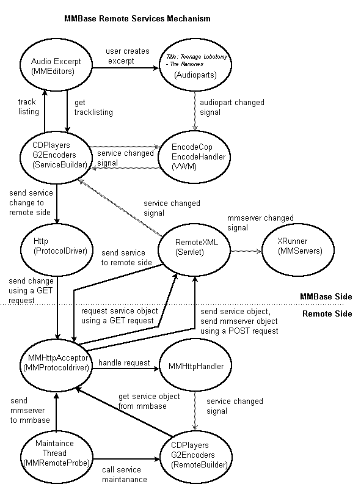
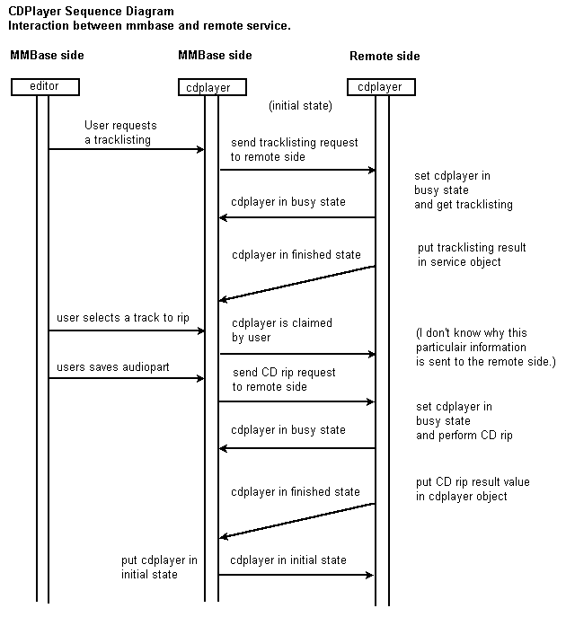
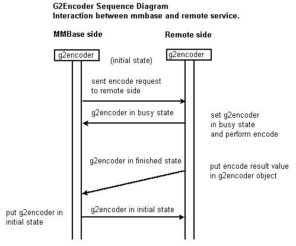

MMBase Remote Services (july 2001)
by David van Zeventer
VPRO Digitaal
Index
1. Introduction
2. Representation of a remote service
3. Controlling a remote service
4. Technical informationAttachments
A1.1. CDPlayer sequence diagram
A1.2. G2Encoder sequence diagramA2. Required input/output data used by MMbase and Remote services
A3. Description of the files used in the remote services system
A4. Installation guide
We describe the MMBase Remote Services by describing how the cdplayer services
can be used to rip the audio of a CD.
Any computer running linux with a cd-rom player can offer its cdplayer to MMBase
as a remote service. The remote service communicates with MMBase through a small
java application and vice versa. With the MMBase editors it is now possible
to control the remote cdplayer.
Currently no remote service implementations for other Operating Systems than
linux exist.
MMBase Remote Services were originally designed and implemented by Daniel Ockeloen. Bugfixes and improvements were added by David van Zeventer.
2. Representation of a remote service
For MMBase to be able to communicate with remote services, first the remote
machine providing the services has to be known. This can be done by manually
creating a so called mmserver object, that will contain the name and
address of the machine.
When the location of MMBase is defined on the remote side, communication is
possible between them.
To be able to control the services that are running on the remote machine,
a representation of the remote services also has to be created on the MMBase
side. This will be done automatically when starting the remote service system.
After starting the remote services system, a message will be sent to MMBase
telling it that its services are available for usage. Inside MMBase this will
result in a creation of these services as service nodes. The services will be
created by a certain service builder. In case of a cdplayer service,
the builder that will create the object will be the cdplayers service builder.
3. Controlling a remote service
A user can control a cdplayer service through the MMBase audioparts editor.
After the user selects that it wants to use a certain CD track as an audiopart,
the selected cdplayer object is changed to reflect the users request.
The cdplayer object change will be sent as a message over the network.
This message contains the following information:
The remote machine eventually receives this message and checks what type of service has been changed. After checking, it will then react by requesting a XML representation of it from MMBase.
The remote cdplayer service node now contains task information and can start
performing its task (CD ripping).
Just before it actually starts the ripping process, the remote side tells MMBase
that it's busy by changing the service and sending it in XML format back to
MMBase.
On the MMBase side, the XML data representing the cdplayer that was sent by
the remote side is received and merged with the MMBase version. Since the state
has become busy, users won't be able to use it's service, since the editors
won't put it available.
When the cdplayer has ripped the CD track, it will store the result value of
the ripping process in the cdplayer object and it will set the state to indicate
it has finished. After that the cdplayer will be sent in XML format to MMBase.
On the MMBase side, the XML data representing the cdplayer that was sent by
the remote side is received and merged with the MMBase version. MMBase will
check the cdplayer state and sees that it has performed a CD rip and it will
check the rip process exitvalue.
If everything went ok, the service will be made available to the user, otherwise
it will be left unavailable in the error state to be fixed manually.
Note: The remote services system doesn't work perfect. It can happen that a CD ripping process fails. The bugs producing these problems have not yet all been found.
The diagram below describes what type of objects communicate with each other
when using the MMBase remote services.
In the diagram the arrows are used to show which object requests or sends information
to another object.
Stippled arrows are used to show what node changed signals are sent when
a node is being created/deleted/changed. Changes are only received by object
types that are listening to change signals.

A sequence diagram showing the communication between MMBase and the remote side can be found in section: A1 Sequence diagrams where A1.1 describes sequence diagram for the cdplayer service and A1.2 for the g2encoder service.
To use a particular service you initialize it by filling the service info
field and setting the service state field.
When the service has performed its task, the remote side code will put the process
exitvalue audiopart objectnr it was working for in the info field and
the state field will be set to finishing state.
More detailed information about the service input/ouput values that are used
during usage can be found in section: A2 Required input/output
data used by MMbase and Remote services.
A description of the files used in the remote services system can be found in section A3 Description of the files used in the remote services system.
Installation details can be found the attachments section: A4 Installation guide.
Attachments
A1.1 Sequence diagram for a cdplayer service

A1.2 Sequence diagram for a g2encoder service

A2 Required input/output data used by MMBase and Remote services.
As can be seen above, remote services can be controlled by setting them in
an certain state. The data necessary to control services are stored in the service.state
field and filling the service.info field.
These same fields are used by the remote service itself to communicate to the
outside world what it is doing.
| Service type | Task | State field | Info field (id means audiopart objectnr.) |
| cdplayers | Initial state | waiting | empty |
| cdplayers | User requests a tracklisting | getdir | empty |
| cdplayers | User has selected a track | claimed | user=Mr. foo lease=3 tracknr=8 |
| cdplayers | User saves audiopart, thus requests CDrip. | record | tracknr=1 id=12345 |
| cdplayers | Remote service starts ripping. | busy | tracknr=1 id=12345 |
| cdplayers | Remote service finished ripping successfully. | waiting | result=0 id=12345 |
| cdplayers | Problem occured during ripping. | waiting | result=8 id=12345 |
| cdplayers | MMBase checks result value and resets service if ok, (result=0) | wating | empty |
| g2encoders | Initial state | waiting | empty |
| g2encoders | MMBase requests service to encode audiofile. | encode | 'id=12345 subdir=12345 inputname=/audiolocation/12345.wav outputname=/encodelocation/12345/surestream.rm sureStream=true encodeAudio=true forceOverwrite=true audioFormat="stereo music"' |
| g2encoders | Remote service starts encoding. | busy | 'id=12345 subdir=12345 inputname=/audiolocation/12345.wav outputname=/encodelocation/12345/surestream.rm sureStream=true encodeAudio=true forceOverwrite=true audioFormat="stereo music"' |
| g2encoders | Remote service encoded successfully. | waiting | result=0 id=12345 |
| g2encoders | Problem occured duing encoding. | waiting | result=8 id=12345 |
| g2encoders | MMBase checks result value and resets service if ok, (result=0) | waiting | empty |
A3 Description of the files used in the remote services system:
On the MMBase side:
HTML files
The following html files are used in the (mm)editors for controlling
a cdplayer:
Located in the audioparts editor source field page.
A new audioparts preview:
JAVA files
The following java files are necessary when working with MMBase remote services.
More information about these classes can be found in the classfiles itself.
Files used for representation of the services in MMBase:
Files used for communicating changes on services to a remote service.
Note: Currently there's only one working protocoldriver implementation
and that is the http implementation. Other implementation do exist but are so
much out of date the rest of the remote services system, that they'll probably
won't work.
The following two classes control the remote services automatically.
For example after ripping a audio cd encoding jobs are automatically queued
for the services by these classes.
Also these classes provide some kind of recovery when the MMBase running these
files is being reset while busy ripping or encoding, or when just finished when
reset occurs. More detailed information can be found in the class headers.
Note: The above classes are vwm (VirtualWebMaster) type classes where EncodeCop is a real vwm and EncodeHandler is a helper thread class. The EncodeCop class has to be connected to a mmserver representating a machine with MMbase installed on it. If you've got more than one MMBase, then it should be connection to one of them. The remote services have to communicate to this particular MMBase address.
Files used for handling the incoming requests from remote services:
On the remote side:
On the remote side, all files in the subdirectories below are needed.
The MMBase/remote subdirectory consists of java files, config files and the remote service startup script.
Script files
The remote service startup script is called:
Config files
Two types of config files exist:
Server config file, containing information about the name of the machine that's running services and the connection & location with MMBase.
Service config file, containing information about the type of service, implementation details and how it is known to the outside world.
connection: The remote machine communicates with MMBase over a connection.
The connection holds the address of the machine running MMBase. Note:
This has to be the address of the MMBase system that also runs the vwms
EncodeCop & EncodeHandler.
eg. connection=http://your.system.name:yourport
sharedsecret: The shared secret is used by MMBase and remoteBuilder
to be able
to authenticate each other, so be sure that this sharedsecret is the
same on your different systems
eg. sharedsecret=AFSDLK234234SLKFJ234lKASFLDKJ34
nodename: The name of the service as it is known by in MMBase. Instead
of using objectnumbers the MMBase remote service system uses specific names
to represent the service.
eg. nodename=CDROM-1
implementation: The classpath to the file with the implementation
of the service
Note: Currently there's only one working implementation and that
is for the linux platform.
eg. implementation: org.MMBase.service.implementations.cdplayers.LiteOn242Linux
buildername: The name of the service builder that creates a representation of the service on in MMBase. -> buildername=g2encoders
nodename: The name of the service as it is known by in MMBase. Instead
of using objectnumbers the MMBase remote service system uses specific names
to represent the service.
eg. nodename=G2ENCODER_BEEP
implementation: The classpath to the file with the implementation
of the service.
Note: Currently there's only one working implementation and that
is for the unix/linux platform.
eg. implementation: org.MMBase.service.implementations.g2encoders.g2encoderUnix
JAVA files
Next I'll give a summary of the most important files within the remote services system.
File that starts up the remote services depending on the property files:
The MMProtocolDriver is an interface file desribing through which methods protocoldrivers
have to communicate:
The MMHttpAcceptor file is the HTTP implementation of the protocol driver that
sends and receives requests. Other implementations have become out of date and
probably won't work with the current version of the remote services system.
The incoming requests from MMBase are service changes signals, that will result
in requesting the service itself from the MMBase side. When the remote service
changes the service itself, it will send POST requests to MMBase sending the
new service.
The MMRemoteProbe file is a maintainance probe thats uses the protocoldriver
to send the machine mmserver state to the MMBase side, letting it know it's
still running.
After letting MMBase know it's still alive, it calls the service maintainance
routines.
A service is represented by the RemoteBuilder file. When implementing a specific
service representation, you extend from this file. Note that these files only
describe the service itself. Actual lowlevel control of the service is described
by the files MMBase/service/* which will be described after this.
Lowlevel control of the actual service (eg. CDROM Player, Encoding Software)
is located in the mmbase/service packages. software that The interface to the
service itself (eg. cdplayer) and its implementation for a specific platform
is described by these files.
Currenly only a unix/linux cdplayer implementation exists. The same goes for
the implementation of the G2 encoder service.
Unix/Linux software that's controlled by the implementations are:
The following is a step by step description on how to setup a remote cdplayer service.
On the MMBase side
- builders/audioparts.xml
- builders/cdplayers.xml
- builders/mmservers.xml (in default mmbase install)
- builders/properties.xml (in default mmbase install)
- builders/rawaudios.xml
- builders/vwms.xml
name: name by which the machine mmserver is known.
state: 2 (Active)
host: full url to the machine running remote services. (eg. http://www.myremotemachine.com:6060)
os: os running on the machine (not necessary)
jdk: the java version running on the machine (not necessary)
name: EncodeCop
status: 2 (Active)
description: Vwm that controls ripping and encoding process of remote services.
classname: mmbase.module.builders.vwms.EncodeCop
On the Remote side